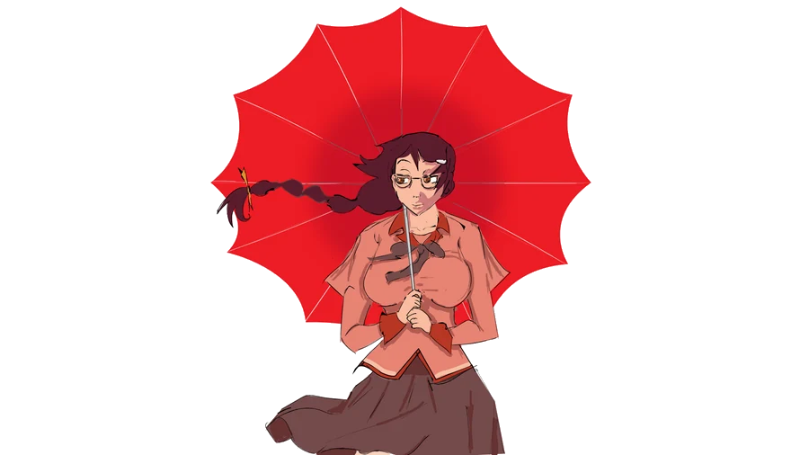
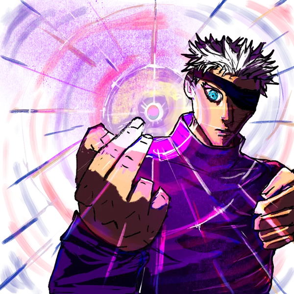

Ilustración y concept art10 imágenes
Portafolio · Bogotá
¿Qué quieres ver?
Puedes cambiar cuando quieras: presiona el logo
Ilustrador y diseñador.
Ilustración, diseño textil, diseño de producto y 3D.
Productor y técnico de audio.
Producción musical, mezcla, DJ y sonido en vivo.
Crew en giras de Linkin Park, Doja Cat y Charlie Puth · Hamburgo 2026
Toca un recuadro para abrir su galería o girar el modelo 3D.
Escenarios, personajes y concept art en digital, junto a dibujo urbano a tinta de mi sketchbook y una portada de libro.
Ilustración digital · SketchbookPiezas gráficas y preparación de archivos para impresión DTF de camisetas
Photoshop · DTFSistema vertical de hidrocultivo para viviendas pequeñas en Hamburgo: concepto ilustrado, planos técnicos con sensores de pH, EC y temperatura, y piezas de materiales upcycled fabricadas en Fab Lab.
Pieza 3D camiseta de diseñador.
Blender · 3D Descargar .glb (25 MB)Diseño y modelado en Blender de una estructura comercial para exhibición en feria.
Blender · 3D Descargar .glb (36 MB)

Ilustrador y diseñador con estudios de diseño editorial e ilustración en HTK Academy Hamburg. Como artista freelance, autodidacta y emprendedor, aporta estética, imagen y estilo a cada proyecto —de la ilustración y el concept art al diseño textil, de producto y 3D—, aprovechando recursos visuales, colores de marca y tipografía para construir identidad, atracción y posibilidades de venta.
Niveles basados en trabajo real: cada herramienta indica en qué proyecto o formación está respaldada.
Modelado, simulación de tela, texturizado UV y render; exportación .glb optimizada para web.
Aplicado en: Stand SOFA 2026 · Diseño 3D FëleVectorización, diseño textil y archivos listos para impresión DTF.
Aplicado en: Diseño textil NimbadoIlustración digital y diseño de personajes.
Aplicado en: ilustraciones de «Sobre mí» · portadas para FëleAnimación 2D cuadro a cuadro.
Retoque, composición y preparación de archivos para impresión DTF.
Aplicado en: Diseño textil NimbadoIlustración vectorial, logos y diseños para estampado.
Maquetación editorial: documentos, portafolios y piezas impresas.
Motion graphics y efectos para video.
Aplicado en: videoclip «Pensando en ti»Exportación y codificación de video para redes y web.
Trabajé en el crew local de tres giras mundiales, en los escenarios principales de Hamburgo. Estos son mis pases de trabajo en 3D: arrastra uno para girarlo.
Site Crew: montaje y desmontaje del recinto. Show Call: equipo de turno durante el concierto.
Lo que puedes contratar conmigo en Bogotá. Cada servicio tiene su precio publicado, sin sorpresas.
Producciones de Féle, mi proyecto musical. Toca un video para reproducirlo aquí mismo; el mix de hip hop se abre en YouTube.
Mix de cumbia latina experimental grabado en una sola toma: composición, mezcla y dirección artística.
rekordbox · DDJ-400 Ver en YouTube ↗Mix de hip hop puro y sin filtro: beats y letras que van directo al grano, para quienes buscan música que realmente se sienta.
Hip hop · Rap Ver en YouTube ↗Producción musical y visual de la canción «Pensando en ti».
Ableton · Premiere · After Effects Ver en YouTube ↗Técnico de audio y producción en vivo, con formación técnica en DNA Music (Bogotá) y experiencia en conciertos masivos en Hamburgo: fui crew en las giras de Linkin Park, Doja Cat y Charlie Puth.
Creador de Féle, un proyecto donde convergen imagen, sonido e identidad textil: compongo, produzco y mezclo en Ableton Live, y llevo la música a sesiones DJ. Me comunico en español, inglés y alemán, una ventaja en producciones internacionales.
Niveles basados en trabajo real: cada herramienta indica en qué proyecto o formación está respaldada.
Producción, composición, grabación, edición y mezcla.
Aplicado en: «Pensando en ti» · proyecto musical FéleMasterización de canciones.
Formación: DNA Music, BogotáMezcla DJ con controlador Pioneer DJ DDJ-400.
Aplicado en: «Cumbia Mix»Operación de consola, flujo de señal y rider técnico.
Formación: DNA Music, BogotáMontaje, desmontaje y transporte de equipos de audio e iluminación en conciertos masivos.
Experiencia: giras de Linkin Park, Doja Cat y Charlie Puth · M&P Productions, Hamburgo (Barclays Arena, Sporthalle) · OKANA Group, BogotáVoz principal y coros: afinación, técnica vocal e interpretación.
Aplicado en: proyecto musical FéleAcordes, acompañamiento y composición de canciones.
Aplicado en: proyecto musical FéleArmonía, acordes y melodías para componer y producir.
Aplicado en: proyecto musical FélePara propuestas de ilustración, diseño o colaboraciones, escríbeme. Cuéntame qué necesitas y para cuándo, y te respondo con una cotización.
Para sonido en vivo, montaje, mezcla o DJ para tu evento, escríbeme. Cuéntame la fecha, el lugar y qué necesitas, y te respondo con una cotización.
¿Quieres saber cuánto cuesta? Mira mis precios →Mira mis precios →